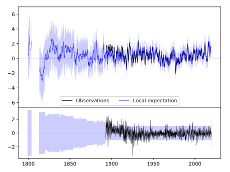
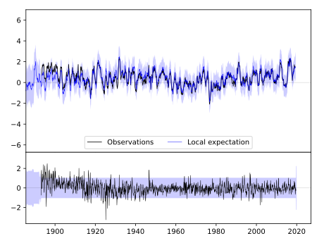
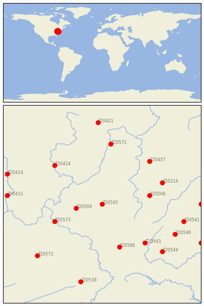

GLENVILLE [USA]


| Neighbour | Name | Country | Distance | Lon/Lat | Years |
|---|
| 720565 | GLENVILLE | USA | 0 | -80.8, 38.9 | 1893-2019 |
| 720569 | SPENCER | USA | 53 | -81.4, 38.8 | 1892-2019 |
| 720568 | PARSONS 1 NE | USA | 97 | -79.7, 39.1 | 1878-2019 |
| 720573 | WINFIELD LOCKS | USA | 105 | -81.9, 38.5 | 1893-2019 |
| 720566 | LEWISBURG 3 N | USA | 116 | -80.4, 37.9 | 1893-2019 |
| 720543 | HOT SPRINGS | USA | 132 | -79.8, 38.0 | 1892-2019 |
| 720214 | OAKLAND 1 SE | USA | 132 | -79.4, 39.4 | 1877-2019 |
| 720424 | PHILO 3 SW | USA | 137 | -81.9, 39.8 | 1893-2019 |
| 720457 | UNIONTOWN 1 NE | USA | 145 | -79.7, 39.9 | 1877-2019 |
| 720571 | WELLSBURG WTR TRMT P | USA | 156 | -80.6, 40.3 | 1877-2019 |
| 720546 | STAUNTON WATER TRMTM | USA | 167 | -79.1, 38.2 | 1893-2019 |
| 720541 | DALE ENTERPRISE | USA | 170 | -78.9, 38.5 | 1893-2019 |
| 720544 | LEXINGTON | USA | 172 | -79.4, 37.8 | 1861-2019 |
| 720572 | WILLIAMSON | USA | 186 | -82.3, 37.7 | 1892-2019 |
| 720431 | WAVERLY | USA | 191 | -83.0, 39.1 | 1883-2019 |
| 720548 | WOODSTOCK 2 NE | USA | 199 | -78.5, 38.9 | 1893-2019 |
| 720414 | CIRCLEVILLE | USA | 204 | -83.0, 39.6 | 1893-2019 |
| 720538 | BURKES GARDEN | USA | 204 | -81.3, 37.1 | 1892-2019 |
| 720421 | MILLPORT 4 NE | USA | 211 | -80.9, 40.8 | 1893-2019 |
| 720539 | CHARLOTTESVILLE 2W | USA | 223 | -78.5, 38.0 | 1837-2019 |